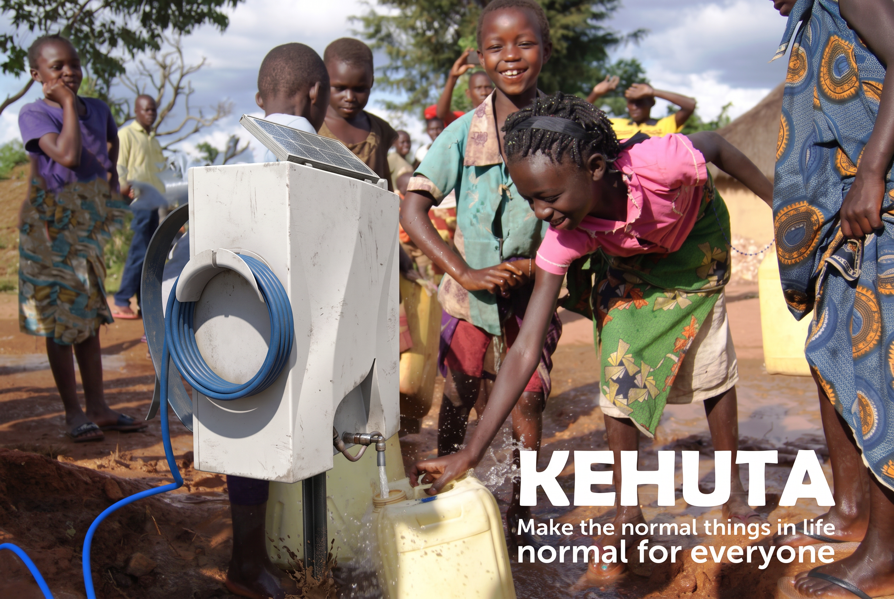
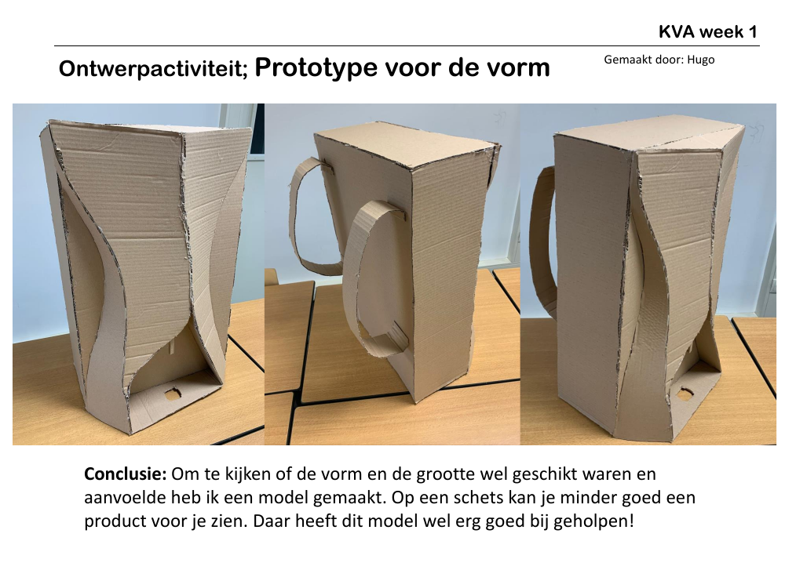
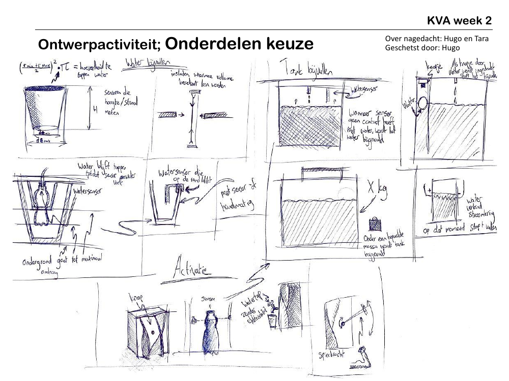

Year 3 · KVA60
KEHUTA:
water for everyday life.
A robust water-access concept that makes a daily essential more reliable, clear and accessible.
Make the normal
normal for everyone.
KEHUTA is a water-pump concept developed around a simple ambition: everyday access to water should be straightforward and dependable. The product combines a clear dispensing point, integrated hose storage and solar support in a compact form suited to outdoor use.
Rather than adding unnecessary interaction, the design focused on making the essential action easy to understand and easy to repeat.
Designed for
clarity and care.
Early exploration compared different activation principles, including a water tap and a force-driven mechanism. The tap direction offered the clearest use, the most accurate water delivery and the fewest required actions, so it became the foundation of the final concept.
Form studies and component sketches developed the relationship between water storage, dispensing, hose management and the outer enclosure. The material direction prioritised outdoor durability, UV and corrosion resistance, and scalable manufacture.

